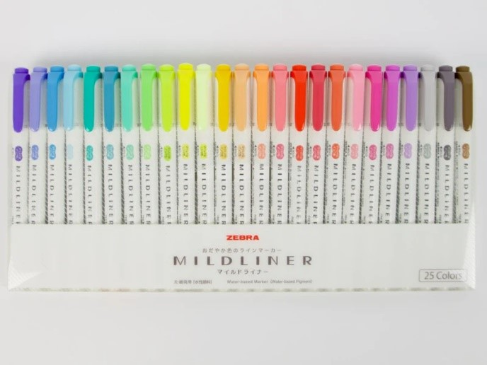
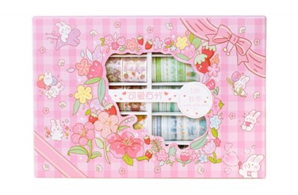

More on Crafts
ihanna.nuiHannas blog documents the creative process of iHanna through various crafting projects; from art journaling, to knitting and thrifting. I particularly love iHannas ventures through collaging, an easy and fun cut and paste project anyone can try!
myblankpaper.comRebecca Greens blog is dedicated to her illustration career. I particularly like her post about Visual Journaling. This site gives me inspiration to include more doodles throughout my journal to compliment pages and encourage visual expression through art.
More on paper and journals
doodlersanonymous.comRebecca Greens blog is dedicated to her illustration career. I particularly like her post about Visual Journaling. This site gives me inspiration to include more doodles throughout my journal to compliment pages and encourage visual expression through art.
notebookstories.comNotebook Stories is run by a passionate 'notebook hoarder' since 2008. They document all the notebooks they collect, as well as what they use the for and their personal notebook recommendations. This site os great if you already have in mind what you want your notebook to be dedicated to, then looking through the various types to find the perfect fit!
Journaling Content Creators
@ARALANDFrom recording her journaling process to touring different stationary stores, ARALAND is one of my favorite stationary content creators. I find her use of mixed media inspiring as she incorporates watercolor art with washi tapes and stickers.
@sem2_worldBased in South Korea, sem2_world uses her channel to vlog her stationary purchases and show off her journaling creations. I find endless inspiration in all her videos where she showcases her sticker aesthetics and adorable stationary collection.
@lostpalettelostpalette is one of my favorite creators who posts great 'journal with me" videos. I find a lot of great products in her videos and take inspiration from her art style!
Published: 20 March, 2024
My first Zebra MildLiner Highlighters
Author: Nariz
When I first started getting into stationary as a studious high-schooler with social media, the Zebra MildLiner Highlighters were one of the first items I bought to start my pen collection. The minimalist palette and dual pen design reflected the aesthetics of 2015, and so all my Pinterest board inspirations and saved Instagram posts included the pastel colorings of these highlighters.
For those who aren’t familiar, Zebra is a Japanese pen company that offers a variety of writing instruments. Their MildLiner brand markets their pends for use in “bullet journals, planners, study notes, schedules, and creative projects”. As of 2024, their selection of highlighters includes 35 different colors ranging multiple shades of the rainbow.
My first highlighter set from Zebra was the Zebra Limited Edition MildLiner 25 Color Set, which I received for Christmas and swatched immediately. I mostly used the double-ended highlighter feature to go over my notes, and occasionally used the dual-tip brush pen to doodle or outline illustrations. Something I have grown accustomed to after years of trying out different pens is gauging their ability to smear ink or bleed through paper. I find this the minimum a good pen can avoid doing. On standard A4 paper, these highlighters do not bleed through. However I found on bounded pages like notebooks, which have an undistinguishably thinner page, they can bleed through on occasion depending on the force of the pen. Additionally, while the soft pastel colors is what typically draws most people to these sets, I found some shades are too light to be noticeable, specifically the classic Yellow shade.
Since I received my first set of MildLiners (about 6 years ago) I have probably gone through 2 or 3 packs. While I do have slight criticisms, I cannot deny that these pens make an excellent staple for those seeking hints of color across their journal pages. Their color palette is what keeps me coming back. Compared to the harsh neon’s of other highlighters on the market, I find solace in the simple, sleek, and quieter colors of the Zebra MildLiner Highlighters.
Published: 15 March, 2024
Intro to Washi-tapes with the ZDOLAKIDS 100 Washi Tape set
Author: Amara
After becoming more comfortable with buying and testing items from different stationary brands, I was still reluctant to venture into new things. I had a growing pen collection, but I knew the stationary world had more to offer than just ink. So in 2021 I purchased my first set of washi tapes.
Washi tape originates from the use and designs of Japanese washi paper used for origami and other traditional paper crafts of the country. Washi tape was conceived in 2006 when it was discovered that sticky adhesive papers are popular mediums for bookmaking . Since then, washi tapes have become a staple in any stationary collection. With different customizations like colors, patterns, icons, and text, washi tapes are an easy way to customize any paper project.
To start my washi tape collection, I decided to go big and order a 100-piece set (most washi tapes are 0.5 – 3.0 cm in width). I made sure to find a set with a variety of designs I saw myself using, this led me to the “Kawaii Washi Tape Set” provided by the ZDOLAKIDS brand on Amazon. With decent reviews and a cheap price per-roll, I made the first step into a washi world.
These tapes are fun and colorful, with color specific patterns spanning from red to purple, I especially liked how the variety was organized by color. I find that every roll of tape is equally adhesive, so no dry tapes that need extra gluing. I also like how the colors aren’t dull and the images aren’t pixilated, only fresh crisp patterns and cute designs. Since I have purchased this set about 3 years ago, I have yet to complete a single roll. Each roll is of substantial length, and I anticipate using these rolls for a while more.
My first set of washi-tapes was a great experience and introduced me into the happy medium of adhesive papers, I use them to decorate my journal pages, or even to cut our specific patterns and use as stickers (like the image on my home page!). I highly recommend this product if you like the selection of designs they provide and have a journal needing fun illustrations.